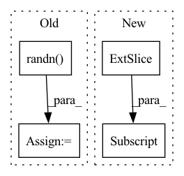

Pattern ID :35658
Before Change
def setup_method(self):
X = np.random.randn(50, 3)
y = np.random.randn(50)
Xnew = np.random.randn( 60, 3)
pnew = np.random.randn(60)
with pm.Model() as model:
cov_func = pm.gp.cov.ExpQuad(3, [0.1, 0.2, 0.3])
mean_func = pm.gp.mean.Constant(0.5)
gp = pm.gp.Marginal(mean_func=mean_func, cov_func=cov_func)
sigma = 0.1
f = gp.marginal_likelihood("f", X, y, noise=sigma)
p = gp.conditional("p", Xnew)
self.logp = model.compile_logp()({"p": pnew})
self.X = X
self.Xnew = Xnew
self.y = y
self.sigma = sigma
self.pnew = pnewAfter Change
// Include additive Gaussian noise, return diagonal of predicted covariance matrix
with model:
self.pred_mu, self.pred_var = self.gp.predict(
self.x_new[:, None] , point=self.map_full, pred_noise=True, diag=True
)
// Dont include additive Gaussian noise, return full predicted covariance matrixIn pattern: SUPERPATTERN
Frequency: 3
Non-data size: 4
Instances Fragment ID: 101562285
Project Name: pymc-devs/pymc3
Commit Name: 8f02bea5e37d115d26cc6e4e27b4d3b51ef96c43
Time: 2022-08-31
Author: w.j.engels@gmail.com
File Name: pymc/tests/test_gp.py
M Class Name: TestMarginalVsMarginalApprox
N Class Name: TestMarginalVsMarginalApprox
M Method Name: setup_method(1)
N Method Name: setup_method(1)
M Parent Class:
N Parent Class:
M File Name: pymc/tests/test_gp.py
N File Name: pymc/tests/test_gp.py
M Start Line: 854
M End Line: 871
N Start Line: 853
N End Line: 879
Before Change
else: // blur
synthesis = transforms.Resize((h, w), antialias=True)(raeget_img)
synthesis = conv_gauss(synthesis.unsqueeze(0), get_kernel_gauss(size=11, sigma=7, n_channels=3))[0]
synthesis += torch.randn( (3, h, w)) * 0.01
return synthesis
After Change
synthesis = transforms.Resize((h, w), antialias=True)(synthesis)
elif conf.init == "+noise":
synthesis = transforms.Resize((h, w), antialias=True)(target_img)
synthesis += torch.normal(0, 0.5, size=(h, w))[None, :]
elif conf.init == "blur":
synthesis = transforms.Resize((h, w), antialias=True)(target_img)
synthesis = conv_gauss(synthesis.unsqueeze(0), get_kernel_gauss(size=9, sigma=5, n_channels=3))[0]
// synthesis += torch.randn((3, h, w)) * 0.5 Fragment ID: 101562286
Project Name: ariel415el/gpdm
Commit Name: 831d7481de51424e7ff451aa4d2651469f5f2a26
Time: 2021-10-19
Author: ariel415el@gmail.com
File Name: retarget_image.py
M Class Name: AnonimousClass
N Class Name: AnonimousClass
M Method Name: get_initial_image(4)
N Method Name: get_initial_image(4)
M Parent Class:
N Parent Class:
M File Name: retarget_image.py
N File Name: retarget_image.py
M Start Line: 86
M End Line: 91
N Start Line: 81
N End Line: 93
Before Change
def sweep_n(ntensor, niter, dtype):
print("n, dtype, ntensor, gflop, runtime, tflop/s")
for n in [16, 32, 64, 128, 256, 512, 1024, 2048, 4096]:
nt_a = torch.nested_tensor(
[torch.randn( n, n) .to(dtype).cuda() for t in range(ntensor)]
)
nt_b = torch.nested_tensor(
[torch.randn(n, n).to(dtype).cuda() for t in range(ntensor)]After Change
)
runtime = bench(nt_a, nt_b, niter)
nt_a_size = torch.ops.aten._nested_tensor_size(nt_a)
lengths = nt_a_size[:, 1]
print(",".join(map(str, [ntensor, dtype, lengths.min().item(),
lengths.float().mean().item(), lengths.max().item(), runtime])))
Fragment ID: 101562278
Project Name: pytorch/pytorch
Commit Name: 943b20e7ae290d8e71f877eb700f197a9df56cbe
Time: 2022-11-02
Author: cpuhrsch@fb.com
File Name: benchmarks/nested/nested_bmm_bench.py
M Class Name: AnonimousClass
N Class Name: AnonimousClass
M Method Name: sweep_n(2)
N Method Name: sweep_n(3)
M Parent Class:
N Parent Class:
M File Name: benchmarks/nested/nested_bmm_bench.py
N File Name: benchmarks/nested/nested_bmm_bench.py
M Start Line: 22
M End Line: 33
N Start Line: 24
N End Line: 40